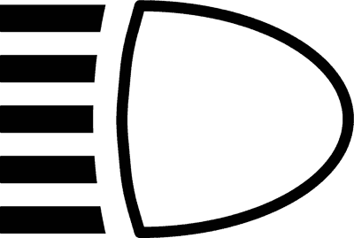
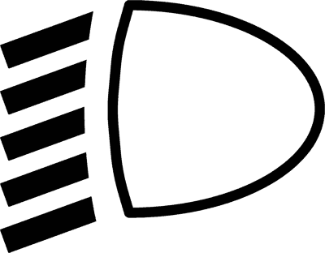
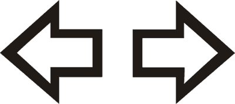
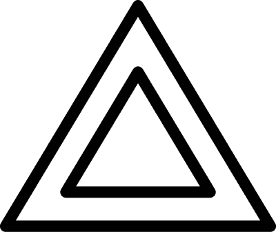
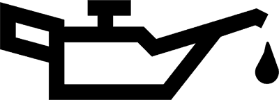
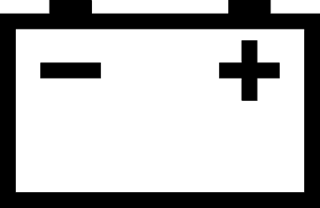
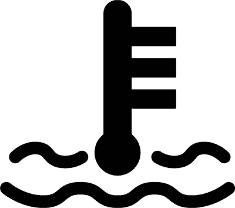
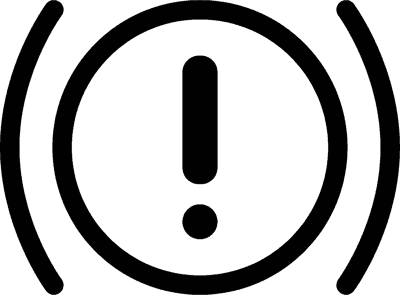
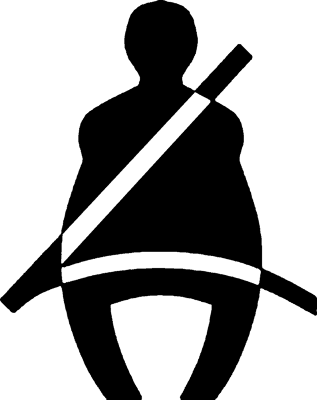

دليل وقاموس الباب 18: استخدام الأضواء، لمبات التابلوه، والعواكس
يركز هذا الباب على المنظومة البصرية والتحذيرية للمركبة: متى تلتزم بالضوء المنخفض، حالات حظر الضوء العالي والانتقال الفوري للمنخفض، أسرار العواكس الضوئية للمقطورات، الحالات الإلزامية الخمس لأضواء الخطر (4 Frecce)، وفك شفرات لمبات التابلوه الحمراء والصفراء لتجنب الفخاخ الوزارية الشهيرة.
💡 المحور الأول: الضوء المنخفض والضوء العالي وقواعد الاستخدام Luci Anabbaglianti e Abbaglianti
هو الضوء المخصص لإنارة الطريق أمامك دون إزعاج أو إبهار مستخدمي الطريق الآخرين.
- متى يلزم استخدامه إجبارياً؟
- من نصف ساعة بعد غروب الشمس حتى نصف ساعة قبل شروقها (da mezz'ora dopo il tramonto a mezz'ora prima del sorgere).
- في جميع الأنفاق (in tutte le gallerie) إجبارياً، حتى لو كانت الأنفاق مضاءة جيداً بنهار مشمس!
- نهاراً وليلاً على كافة الطرق السريعة وخارج المدن (Autostrade e Strade extraurbane) للمركبات الآلية (أو استخدام أضواء السير النهاري DRL نهاراً في الظروف العادية).
- أثناء الظروف الجوية السيئة: المطر، الضباب، الغبار الكثيف، وتساقط الثلوج.
- ⚠️ فخ توجيه المصابيح (Orientamento dei fari): إذا كانت المصابيح موجهة للأعلى بشكل خاطئ أو محملة المركبة بحمولة خلفية ثقيلة ترفع مقدمة السيارة، فإن الضوء المنخفض سيسبب إبهاراً خطيراً (Abbagliamento) للسائقين القادمين وكأنه ضوء عالي!
- ⚠️ فخ أضواء الموضعة (Luci di posizione): لا تكفي وحدها أثناء السير خارج المدن حتى نهاراً في يوم مشمس مشرق!
يُستخدم لإنارة المسافات البعيدة، ولكن تحكمه شروط قاسية جداً لخطورة الإبهار البصري.
- شروط الاستخدام: يُسمح به ليلاً فقط خارج المدن (fuori dei centri abitati) عندما تكون الإنارة العامة منعدمة أو غير كافية، مع خلو الطريق من المركبات القادمة أو التي تسير أمامك.
- 🚫 حالات الإطفاء الإلزامي الفوري والانتقال للمنخفض:
- عند تقابل سيارة أو دراجة أو حتى مشاة قادمين من الاتجاه المعاكس لتفادي إبهارهم.
- عند تتبع مركبة أخرى من الخلف على مسافة قريبة لتجنب إبهار سائقها في مرآة الرؤية الخلفية.
- عند الدخول إلى المناطق السكنية المأهولة (Centri abitati).
- في الضباب الكثيف (لأن الضوء العالي يرتد من ذرات الضباب ويشكل جداراً أبيض يعمي السائق).
- الوميض المتقطع (A lampeggio): مسموح به نهاراً وليلاً للتحذير من خطر فوري، وللتنبيه عند الرغبة في التجاوز خارج المدن.
🔺 المحور الثاني: العواكس الضوئية (I Catadiottri) — 15 سؤالاً وزارياً Riflettono la luce
العواكس هي أجهزة تعكس الضوء الساقط عليها (Riflettono la luce) لتجعل المركبة مرئية ليلاً أو عند الوقوف وإطفاء المحرك. وهي لا تصدر ضوءاً بذاتها ولا تحتاج لأسلاك كهرباء!
| موضع العاكس | نوع المركبة | اللون والشكل الإلزامي | الفخ الوزاري المتكرر |
|---|---|---|---|
| الخلف (Posteriore) | السيارات والشاحنات العادية | أحمر وغير مثلث (Rosso NON triangolare) | ممنوع تركيب عواكس مثلثة على سيارة عادية! |
| الخلف (Posteriore) | المقطورات ومقطورات الأمتعة (Rimorchi e Carrelli) | أحمر ومثلث الشكل إجبارياً (Rosso Triangolare) | الشكل المثلث خاص وحصري بالمقطورات فقط. |
| الأمام (Anteriore) | المقطورات (Rimorchi) | أبيض وغير مثلث (Bianco) | لتحديد عرض المقطورة ليلاً عند السحب. |
| الجوانب (Laterale) | المركبات الطويلة والحافلات | أصفر عنبري (Giallo ambra) | لتوضيح طول المركبة من الجانب في الظلام. |
↔️ المحور الثالث: إشارات الاتجاه وأضواء الخطر الرباعية — 38 سؤالاً Indicatori & Segnalazione Pericolo
- متى يلزم تشغيل الغماز؟ عند أي حركة جانبية للمركبة: الانعطاف (Svolta)، تغيير المسار (Cambio di corsia)، الخروج من الركن وبدء السير (Partenza dal margine)، الاقتراب من الرصيف للتوقف (Accostarsi al margine)، مناورة التجاوز (Sorpasso)، الدوران في الميدان (Rotatoria)، والرجوع للخلف (Retromarcia).
- التوقيت: يجب تشغيل الإشارة مسبقاً بوقت كافٍ (con sufficiente anticipo)، وإبقاؤها مشتعلة طوال المناورة، وإطفاؤها فور انتهاء المناورة.
- ⚠️ فخ الأولوية القاتل (NON dà la precedenza): تشغيل إشارة الاتجاه لا يعطيك أي حق في الأولوية، بل هو مجرد تحذير للآخرين؛ وتظل ملزماً بالتأكد من خلو المسار من المرايا والنقاط العمياء.
- ⚠️ فخ خلو الطريق: يجب استخدام الغماز حتى لو كان الشارع خالياً تماماً من المركبات أو المشاة.
تشغيل كافة إشارات الاتجاه الأربعة في وقت واحد عبر زر أحمر مميز برمز مثلثين متداخلين.
الحالات الإلزامية الخمس لاستخدامها في الامتحان:
- عند حدوث تباطؤ مفاجئ وشديد أو تشكل صفوف زحام مفاجئة (Forti rallentamenti o formazione di code) على الطرق السريعة وخارج المدن لتنبيه القادمين من الخلف.
- عندما تكون المركبة معطلة أو متوقفة اضطرارياً وتشكل عائقاً في مسار السير (Ingombro della carreggiata).
- أثناء قطر مركبة معطلة (Durante il traino di veicolo in avaria).
- أثناء نزول السائق لوضع أو استعادة مثلث الخطر العاكس خارج المدن.
- أثناء صعود ونزول الأطفال من الحافلات المدرسية (Scuolabus).
🚨 المحور الرابع: لوحة القيادة ولمبات التحذير الرسمية — 55 سؤالاً Spie del Cruscotto e Simboli









🚗 المحور الخامس: إضاءة اللوحة الخلفية والمنبه الصوتي (Clacson) Targa e Segnalazione Acustica
- لون الإضاءة: أبيض (Luce bianca).
- تضيء تلقائياً ومباشرة مع تشغيل أضواء الموضعة (Luci di posizione).
- الهدف القانوني: تمكين قراءة حروف وأرقام اللوحة بوضوح ليلاً من مسافة 20 متراً على الأقل.
- فخ: لا تُشعل فقط ليلاً، بل نهاراً أيضاً كلما كانت أضواء السيارة مشتعلة (في الأنفاق، المطر، أو الضباب).
على الرغم من أن عنوان الباب 18 يتضمن "Dispositivi acustici"، إلا أن بنك الأسئلة الوزاري الرسمي الحديث وزع قواعد الكلاكس على: الباب 13 (قواعد السير)، الباب 15 (التجاوز)، والباب 24 (التلوث والضوضاء).
- داخل المدن (Nei centri abitati): ممنوع منعاً باتاً إلا في حالة الخطر الفوري والمباشر لتفادي اصطدام وشيك، أو عند نقل مصاب/مريض في حالة طوارئ حرجة.
- خارج المدن (Fuori dei centri abitati): مسموح به باعتدال لسلامة السير، مثل التنبيه عند المنعطفات العمياء الحادة، أو التنبيه قبل التجاوز نهاراً.
📖 القاموس التقني المبوب ثنائي اللغة (A2) Glossario Ufficiale
| المصطلح الإيطالي | الترجمة العربية | ملاحظات وفخاخ الامتحان | استماع |
|---|---|---|---|
| Proiettori anabbaglianti | الضوء المنخفض (العادي) | إلزامي في كل الأنفاق ونهاراً خارج المدن. | |
| Proiettori abbaglianti | الضوء العالي (فوانيس العمق) | ممنوع في المدن وأثناء التقابل أو التتبع. لمبته زرقاء. | |
| A lampeggio | بالوميض السريع المتقطع | مسموح به للتحذير من الخطر أو للتجاوز خارج المدن. | |
| Catadiottri | العواكس الضوئية | تعكس الضوء ولا تصدر ضوءاً بذاتها. مثلثة فقط للمقطورات. | |
| Indicatori di direzione | إشارات تغيير الاتجاه (الغمازات) | إلزامية مسبقاً، ولا تعطي أي حق أولوية. | |
| Segnalazione luminosa di pericolo | أضواء الخطر الرباعية (4 frecce) | عند الزحام المفاجئ، الأعطال، القطر، ونزول حافلات المدارس. | |
| Pressione dell'olio | ضغط زيت المحرك | لمبة حمراء، تعني انخفاض الضغط؛ يلزم إيقاف المحرك فوراً. | |
| Generatore di corrente | المولد / الدينامو | إذا أضاءت لمبته فتعني أنه لا يشحن البطارية. | |
| Liquido di raffreddamento | سائل تبريد المحرك | لمبة حمراء، تشير إلى سخونة المحرك المفرطة. | |
| Luce della targa | إضاءة لوحة الأرقام | بيضاء، تضيء مع أضواء الموضعة، قراءة من مسافة 20 متراً. | |
| Luce retronebbia | كشاف الضباب الخلفي | يُشعل فقط عندما تقل الرؤية عن 50 متراً لتجنب إبهار الخلف. | |
| Abbagliamento | الإبهار الضوئي / العمى المؤقت | ينتج عن الضوء العالي أو الفوانيس المنخفضة الموجهة للأعلى. |
🎯 جدول الفخاخ الوزارية المقارنة (Vero / Falso) Trappole dei Quiz
"E' obbligatorio accendere i proiettori anabbaglianti nelle gallerie stradali, solo se scarsamente illuminate."
التعليل الصحيح: خطأ؛ تشغيل الضوء المنخفض إجباري في كافة الأنفاق حتى لو كانت مضاءة نهاراً بشكل ممتاز.
"Una spia di colore rosso contrassegnata dal simbolo della batteria, se accesa durante la marcia, indica che la batteria è completamente scarica."
التعليل الصحيح: خطأ؛ اللمبة تعني أن المولد (Alternatore) لا يشحن البطارية، ولا تعني بالضرورة أنها فارغة تماماً في تلك اللحظة.
"I catadiottri installati nella parte posteriore di autovetture sono di colore rosso e di forma triangolare."
التعليل الصحيح: خطأ؛ العواكس المثلثة مخصصة حصرياً للمقطورات (Rimorchi)، أما سيارات الركوب العادية فعواكسها حمراء غير مثلثة.
"L'uso dell'indicatore di direzione dà diritto di precedenza nella manovra di sorpasso."
التعليل الصحيح: خطأ؛ إشارة الاتجاه لا تعطي أي حق أولوية على الإطلاق.
"La targa posteriore di un autoveicolo deve essere illuminata con una luce bianca."
التعليل الصحيح: صحيح؛ إضاءة اللوحة الخلفية بيضاء وتسمح بقراءة اللوحة من 20 متراً على الأقل.